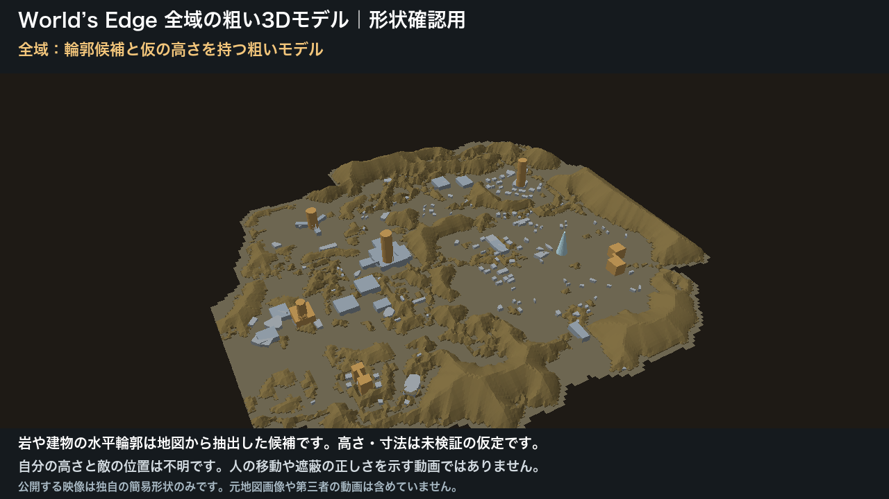
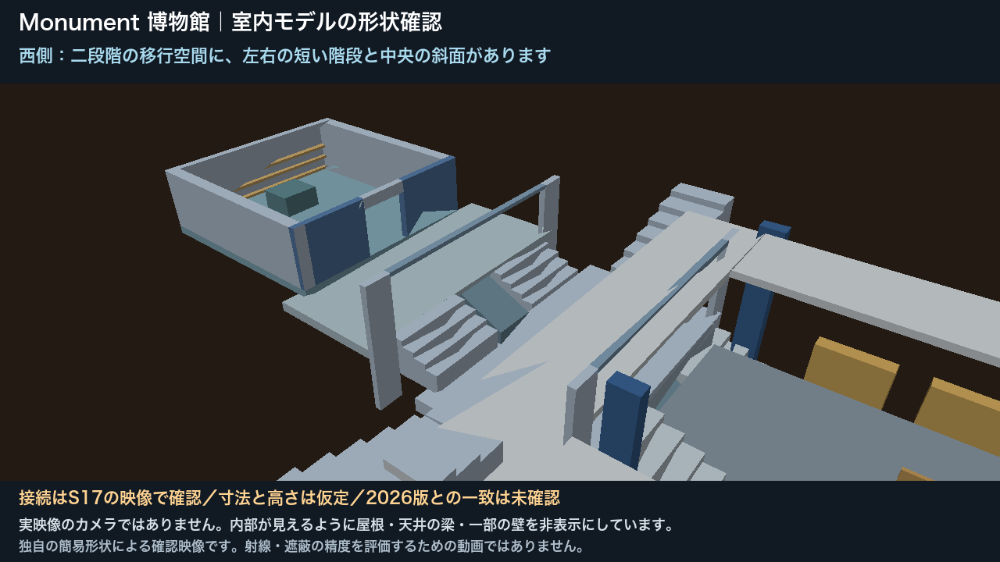
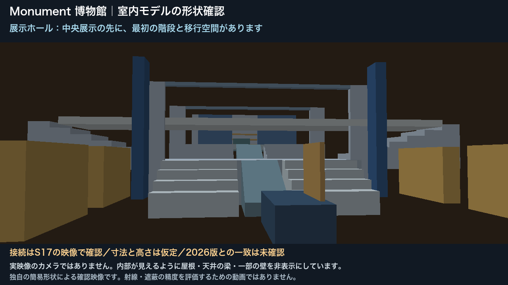
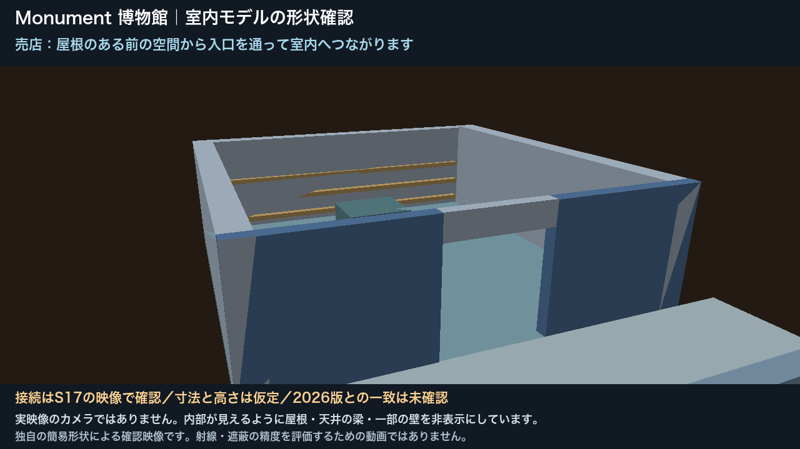
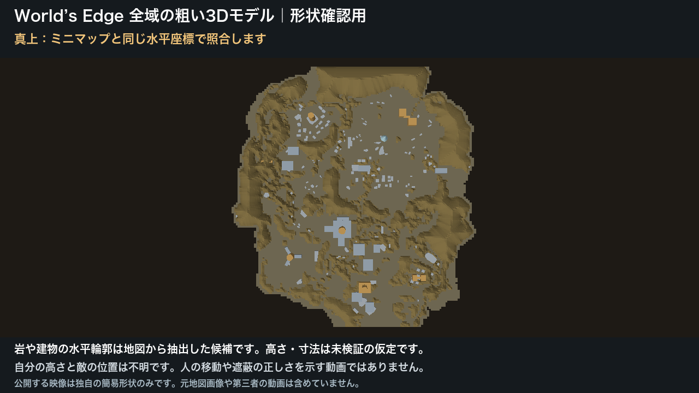
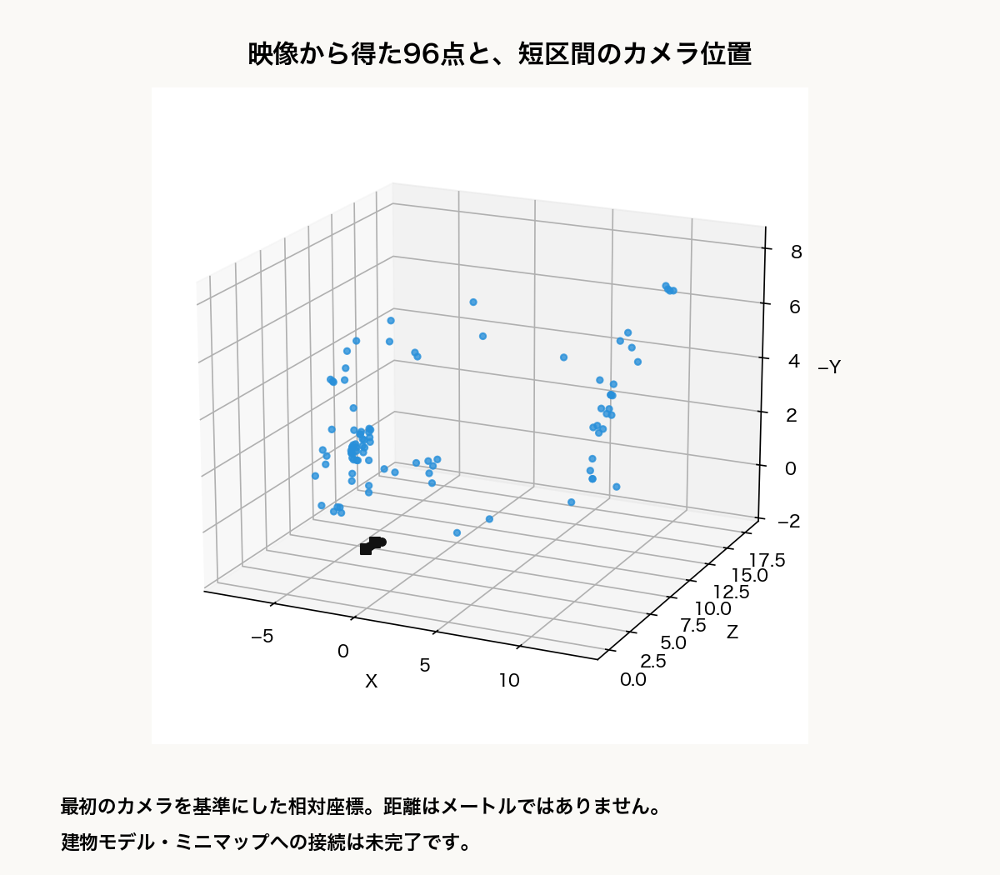
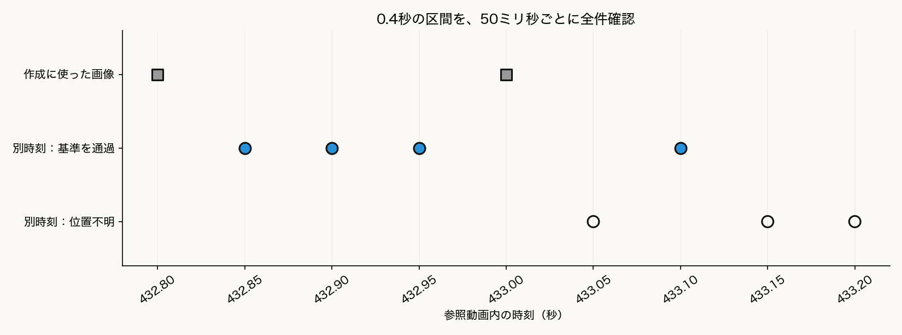

1. 成果の要約
最終目標は、プレイ動画から自分・敵・遮蔽物の位置関係を復元し、戦闘を振り返れるようにすることです。今回、その土台となる静的なマップと、映像の位置をマップへ対応させる検証処理を用意しました。
全域モデルと博物館内部は、同じ平面座標で表示できる構成です。一方、映像から得た96点の点群は別の相対座標にあり、建物モデルへ正確に接続する作業は残っています。253形状と82部品を、そのまま足して完成した全域モデルの数とはしていません。
今回の到達点は「モデルの作成と、映像対応の限定実験」です。実動画の人物移動をマップ全域で安定して追跡する段階、敵の3D配置、被弾を防ぐ位置の判断は未完成です。モデルが表示できることと、実際の位置を正確に復元できることを分けて報告します。
2. 全域モデルの成果
World’s EdgeのMU4／Season 17の地図を参照し、地面、岩域の候補、建物の屋根候補、目立つ施設や橋を独自の簡易形状にしました。ゲームから3Dアセットを抽出したものではありません。

| 対象 | 形状数 | 作成内容 |
|---|---|---|
| 地面 | 1 | 地図の陸域に対応する面 |
| 岩域候補 | 65 | 地図の輪郭を基にした立体候補 |
| 屋根候補 | 158 | 建物らしい領域を基にした立体候補 |
| 施設・橋など | 29 | 目立つ構造を手で補った簡易部品 |
地図の横・縦の位置をモデルの平面位置へ変換できるようにしました。ミニマップ照合で得た地点を、この座標へ対応させられます。ただし、建物の高さ、全建物の網羅性、地下や屋内の形状、正確な衝突形状は、全域モデルだけでは確定していません。
3. 博物館内部の成果
Monumentの博物館1棟を詳細化しました。Season 17の見学映像で確認した、水平な東入口、展示室、二段階の階段と中央の斜路、中間の部屋、売店を接続しています。ガラス屋根や壁は個別に非表示にでき、内部を確認できます。

壁・床・段・斜路・展示台・出入口を別々の部品として保存しました。各部品には根拠となる映像や仮定を記録し、部屋同士の接続もデータ化しています。見えていない屋外階段の行き先は、不明のまま保持しています。
14秒の形状確認動画
全景、水平な入口、展示室、階段・斜路、売店を順に表示します。動画のカメラは説明用に配置しており、実際のプレイヤー視点を復元したものではありません。
展示室・売店と、全域の真上の図も見る



4. モデルを作った手順
手順1：素材と対象範囲を決める
全域はWorld’s Edge MU4／Season 17を基準にし、内部は見学映像のある博物館1棟に限定しました。ユーザーの戦闘素材、編集された紹介映像、見学映像を区別し、同じ部屋を別の方向から確認できる場面を探しました。
Season 17の見学映像と2026年のユーザー素材で、内部が同じ構造のままかは未確認です。年代の違う映像を混ぜて、同一の測量結果とは扱っていません。
手順2：全域の平面輪郭を、簡単な立体へ変える
地図から陸域、岩らしい領域、屋根らしい領域を候補として取り出しました。それぞれの平面輪郭に仮の高さを与え、地面や箱に近い形へ変換します。橋や塔などは、映像や地図の位置関係を参考に手で補いました。
この段階で作るのは、場所を把握するための粗いモデルです。色や輪郭から見つけた候補が、本当に一つの建物かどうかは別途確認が必要です。
手順3：複数の場面から、内部の接続を確認する
展示室から売店へ歩いて進む場面を確認し、部屋と出入口、左右の階段、中央の斜路を整理しました。連続映像を確認したことで、初期に仮置きした「東入口の長い下降階段」を撤回し、売店を独立した部屋から接続済みの部屋へ更新しました。
映像で確認したのは接続の順序と構造です。部屋の長さや階段の高さを測れたわけではないため、数値の寸法は仮定として保存しました。
手順4：床・壁・階段を部品にし、全域と同じ座標へ置く
内部を82部品へ分け、どの床からどの部屋へ進めるかを記録しました。ミニマップの画像同士の変換を組み合わせ、局所モデルを全域モデルと同じ平面座標へ移しています。この配置は大まかな対応で、実際の内部の向きや位置精度まで確定していません。
内部に重なる粗い地面・岩・屋根候補は、表示用の周辺モデルから切り取りました。切り取った面は開いた形になるため、そのまま正確な衝突判定に使える形状とはしていません。
手順5：部品と経路を検査し、再利用できるデータで保存する
立体の面が壊れていないか、床が人物の足を支えるか、階段と床がつながるか、通路が壁や展示物で塞がっていないかを検査しました。形状はJSONとOBJ、色はMTL、部屋の接続や根拠は構造化データとして保存しています。ブラウザでの表示と14秒の確認動画も作成しました。
5. 実映像から位置を求める手順
静的な建物モデルの作成と、動画の中の人物をそこへ配置する処理は別の工程です。今回は、手動で選んだ構造の角を使う方法と、画像の模様を自動で探す方法を試しました。
方法A：モデル上の角と、画像上の角を対応させる
- 階段や開口部の角に、画像上で印を付けます。同じ角の3D位置をモデルから取り出します。
- その対応から、画像を撮ったカメラの位置と向きを逆算します。カメラの画角、つまり画面に映る範囲の広さも仮定を記録します。
- 計算に使わなかった点や、別時刻の画像へモデルを投影し、位置がずれていないか確認します。
- 一致しないフレームは位置不明とし、前後をつないで座標を作りません。
結果として、複数画像で寸法を調整した版は、別時刻14フレームで受理基準を通りませんでした。画像の「階段の内角」が手前の台座で隠れた見かけの境界である可能性や、開口部と階段を同じ幅にする未支持の仮定が見つかりました。見えない角は未使用に訂正し、元の注釈と負の結果も残しています。
方法B：画像の特徴から、相対的な3Dを作る
- ミニマップ、味方名、銃などの動く表示を避け、壁や展示物の模様を画像間で照合します。
- 別の位置から撮った2枚の見え方の違いを使い、3Dの点とカメラ同士の相対位置を求めます。
- 得られた点を次の画像へ追い、その3D位置と画像上の位置から、各時刻のカメラ姿勢を計算します。
- 確認用の点とのずれが大きい場合や、必要な点が足りない場合は不明にします。

環境として使う画像領域を広げることで、照合できた特徴の対応は44組から139組へ、取得できた3D点は35点から96点へ増えました。ただし、点数が増えたことだけで、長時間の追跡が成功したとは判断していません。
6. 検証結果と現在の到達点

| 確認対象 | 結果 | この結果が意味すること |
|---|---|---|
| 全域モデル | 253形状のデータ整合性検査に合格 | 座標や面の構成の検査。地形の実寸精度ではない |
| 博物館内部 | 82部品の床・階段・経路などの検査に合格 | 作成モデル内での整合性。実ゲームの寸法一致ではない |
| 建物モデルへの映像対応 | 別時刻14枚中0枚を受理 | 建物の仮寸法や対応点の見直しが必要 |
| 相対点群への短時間の映像対応 | 作成用を除く7枚中4枚を受理 | 0.4秒の区間内の画像整合。連続追跡や全域配置の成功ではない |
| 相対点群への長い区間の映像対応 | 別時刻の受理0枚 | 先の434.2秒の姿勢も不明 |
| 実装・動画 | 84テスト合格、168フレームを全て読み出し | 処理と14秒動画の動作確認。実映像の3D精度の証明ではない |
画像上のずれはピクセルで測っています。確認用の点のずれが小さくても、仮寸法のモデルならメートル単位で正しいとは限りません。実映像には正解の3D位置がないため、カメラ位置のメートル誤差、向きの角度誤差、敵位置の誤差、遮蔽判定の正解率は未実証です。
また、カメラ姿勢の計算に使わない確認点も、別時刻の形状調整では使っている場合があります。この検証は「時刻の異なる画像で整合するか」の確認であり、未知の形状への精度試験ではありません。
自分の戦闘素材には、展示室内を連続して歩く区間がありません。そのため、見学動画での限定実験と、自分の室内移動・敵の配置ができたことを混同していません。人物の視界外の位置も生成していません。
7. 今後の進め方と参照先
次の重点は、相対点群と内部モデルを、信頼できる共通の目印で接続することです。隠れた角を除外し、階段と開口部の幅などの仮定を見直したうえで、作成に使っていない時刻で検査します。
全域へ広げる際は、同じマップ版の見学素材から場所ごとの参照データを作り、完成したマップを動画ごとに再利用する構成を目指します。まず室内・屋外・上下階をまたぐ場所で工程を確かめ、人の修正にかかった時間も含めて効率を評価します。これは次の実装方針であり、比較実験がすべて完了したという意味ではありません。
報告時に使える説明文
World’s Edgeの全域粗モデルと、博物館1棟の内部モデルを作成しました。内部は展示室から売店までを接続し、床や階段の整合性を検査しています。映像からの位置推定では、短区間の相対3Dを取得できましたが、建物モデルへの安定した対応と人物追跡は引き続き検証中です。
モデル・動画・検証データ
- 全域モデル：操作・データのダウンロード
- 内部モデル：操作・原動画へのリンク・映像対応・点群
- 内部モデルのレビュー動画
- 全域化の手法と制作上の注意点
- 別資料：ミニマップの2D位置推定の改善。本資料の3D実験とは条件を分けています。
- 本資料の数値・元データのハッシュ
内部の接続の参考：The Apex Legends Museum (Full Tour) の7分14秒〜7分25秒。この区間の移動を確認しましたが、動画全編が編集のない連続撮影とはしていません。本資料の図は独自の簡易モデルと数値データから作成し、第三者の元動画・地図画像・ゲームアセットは転載していません。